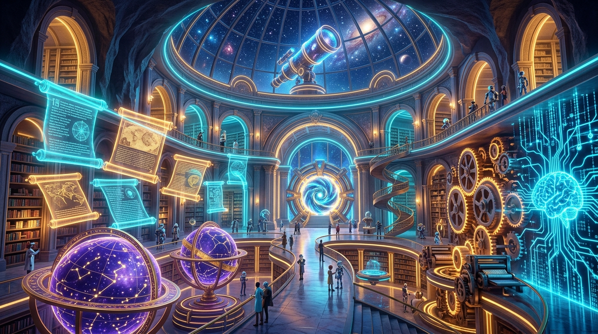

Tarihi keşif sorularını araştırılabilir bilimsel hipotezlere dönüştür, bağımsız/bağımlı değişkenleri keşfet!
20 bölümün tamamını başardın! Tarihi keşif sorularını bağımsız ve bağımlı değişkenleri net belirlenmiş bilimsel hipotezlere dönüştürdün.
📌 Canlı ders panelindeki ✏️ Cevapla butonuna tıklayın ve bu şifreyi girin!